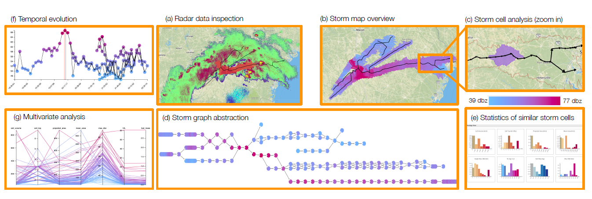
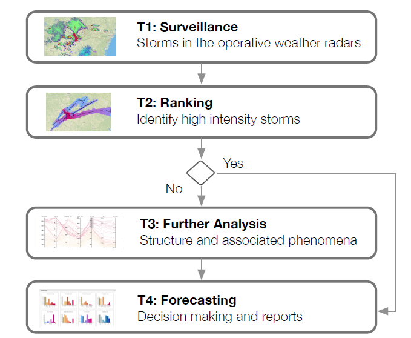
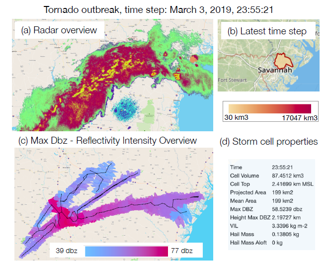
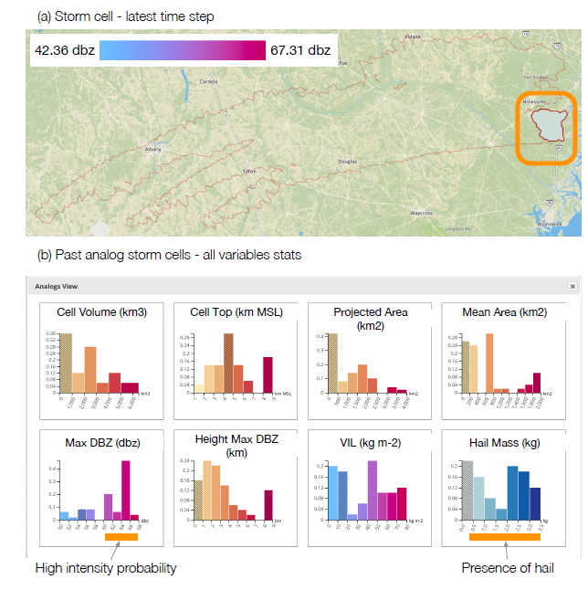

A Story about the weather
By Alexandra Diehl
done
Weather predictability influences many aspects of human life and constitues a grand challenge
One severe effect of thunderstorms are rapidly developing flooding
Forecasting such effects of thunderstorms is still a challenge!

That's why we present you Horneo
Horneo is a visual analytics tool for the detection of hazardous thunderstorms and their characterization.
Horneos task workflow consits of four steps

These four steps have been identified together with a primary domain expert.
Based on the task analysis and multiple design evaluations we developed Horneo
Now we show you some use cases!
The storm took place on March 3rd, 2019 over the course of six hours, with a total of 41 tornadoes
This visualization shows a storm intensity overview from blue to purple ordered by intesity
We analyzed a tornado outbreak extending to Savannah
Here we can see the hail data from 0kg to 11.2kg, from white to blue
Also ranging all the way to Savannah

The image presents an overview of the radar data for the latest time step:
(a) the radar reflectivity corresponding to the selected time step
(b) the storm cell detected by Titan at the selected time step
(c) the complete reflectivity intensity evolution (max dbz)
(d) the storm cell properties

The image shows an overview of the development of hail mass over time and space
(b) presents a detailed view for the selected thunderstrom
(c) By interactive analysis of the temporal evolution view and the storm map view, we notice two peaks associated with large hail potential

Finally we visualize the potential hazard for this cell by showing the probability distribution of similar past storm cells.
The probability distribution indicates a high likelihood that the storm will continue to grow in intensity and that hail mass is present.
Domain Expert Evaluation
Domain experts found the tool suitable for their daily task workflows
Results from the interview showed that domain experts found the visualizations very to extremely expressive, very easy, and very useful!
In the future our collaborators would like to evaluate the tool with real-time data and add additional data sets coming from sensors and numerical weather prediction models
Would you like to see some details about the implementation?

Horneo is composed of a backend server and a frontend client, which consumes information provided by the server.
The server provides a set of API endpoints.
The frontend is written in Javascript, jQuery and D3.js
The weather data originate from NEXRAD stations provided by NOAA.
Thank you for scrolling!
Check out our paper Horneo!
Thank you for scrolling!
Check out our paper Horneo!